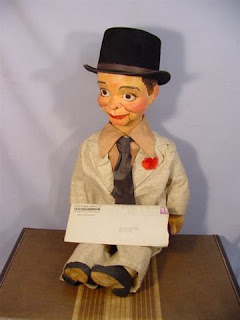

Vintage Maher figure
2/19/2011
{kind=link}

It was Dave Allen that drew my attention to this vintage Fred Maher figure now being offered on eBay. (Item 380317196565) This truly is an historical item, unusual because it comes with the letter sent with the figure to the original owner, Mr. Edgar Hoffman.
This letter from Fred Maher was dated 11/4/42 and the figure sold for $22.50! The eBay seller mistakenly understood the letter to indicate Fred Maher carved this dummy from wood. But as far as I know, while the Mahers did build figures from Plastic Wood wood-dough, Fred never carved a wooden figure.
The figure appears to be a made-over ventriloquist doll from that era, (probably a Regal doll). A quick inspection into the open mouth of the figure will confirm manner of construction. It definitely is a figure sold by The Fred Maher School of Ventriloquism (Detroit, MI). I'm happy (I think) I'm no longer a collector of Maher memorabilia...this fellow is as close to original as any I've seen from that era of nearly 70 years ago, and comes with original paperwork. Wow! I'd be wanting to bid!
Edgar Hoffman, by the way, lived in Akron, Ohio at the time, and a picture of Mr. Hoffman holding this figure was included on one of the Maher's early advertising brochures used to promote the Maher Home Study Course of Ventriloquism. If someone reading this wins this figure and you would like to own a copy of the Maher advertising brochure just mentioned, contact me.